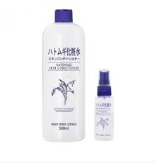
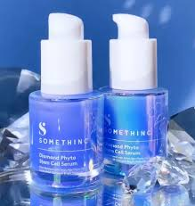
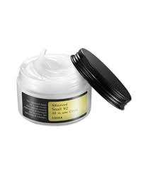
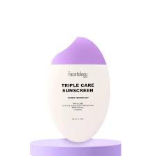

Why Morning Skincare?
Morning skincare is essential for protecting your skin from environmental factors, such as UV rays and pollution. It helps keep your skin fresh and healthy throughout the day. Following the right skincare steps is important for maintaining healthy skin.
Morning Skincare Routine
Follow this morning skincare routine for a glowing and protected skin:
Cleanser: Membersihkan kulit dari kotoran, minyak, dan sisa produk yang mungkin masih ada dari malam sebelumnya.
Toner: Menyeimbangkan pH kulit dan menghidrasi kulit.
Serum: Serum mengandung berbagai bahan aktif seperti antioksidan, vitamin C, atau kandungan khusus yang sesuai dengan kebutuhan kulit kita.
Moisturizer: Membantu menjaga kelembapan kulit sepanjang hari dan memperbaiki skin barrier.
Sunscreen: Kunci dari skincare pagi adalah menggunakan sunscreen yang berguna untuk melindungi kulit dari sinar UV, membantu mencegah kerusakan akibat sinar UV, penuaan dini, dan risiko kanker kulit.
Penting untuk diingat bahwa produk dan langkah yang tepat untuk morning skincare dapat bervariasi tergantung pada jenis kulit dan kebutuhan kulit. Gunakan produk yang cocok untuk kulit kita.
Benefits of Morning Skincare
The benefits of morning skincare include:
- Protection from UV rays
- Hydrated and fresh skin
- Prevention of premature aging